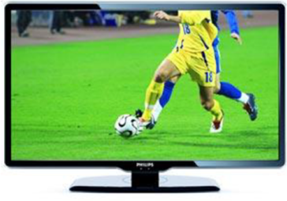

2005-2010
Avançao tecnologico
• 2007: Surgem as televisões LCD.

•Filmes/desenhos/séries:
• 2008: Pixar Animation Studios lança o filme WALL·E
•Músicas de sucesso:
• 2006: My Love (feat. T.I.) - Justin Timberlake
•Acontecimentos diversos:
• 2008: Chega ao fim a governo de Fidel Castro em Cuba.